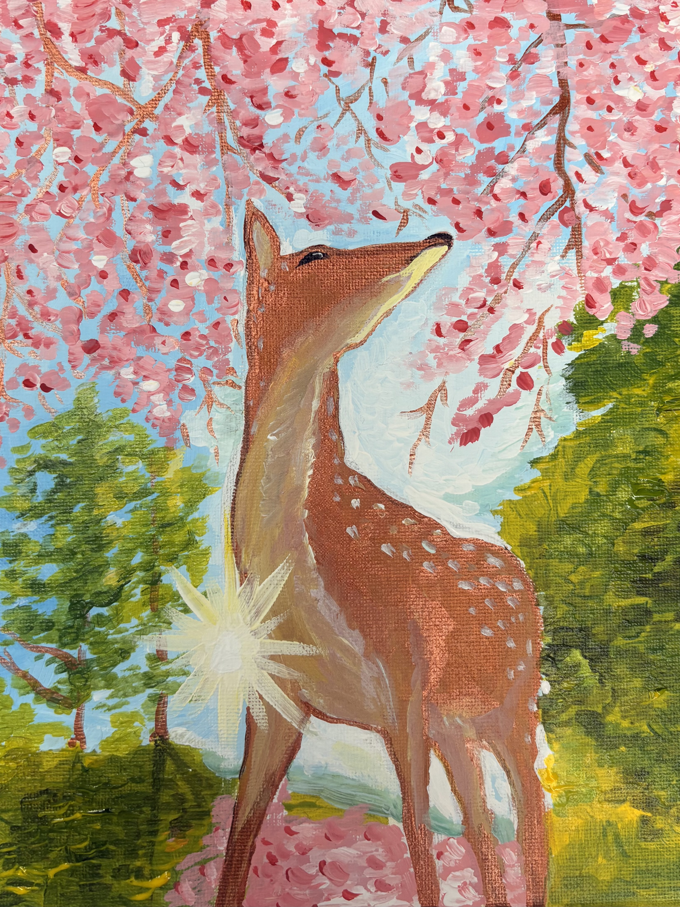
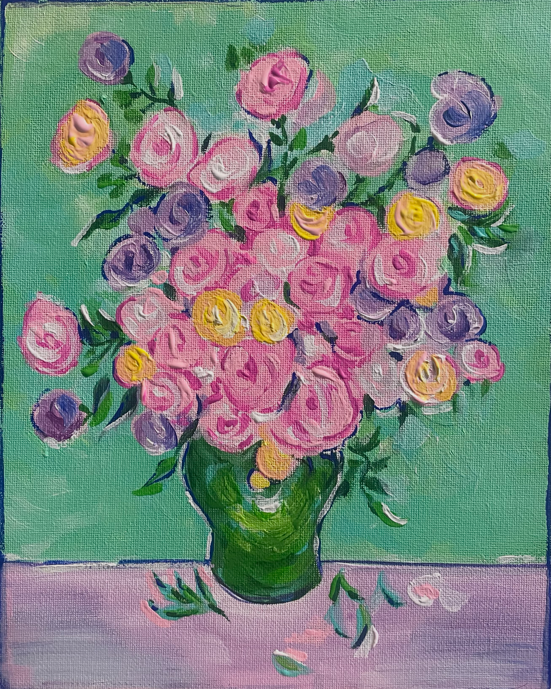
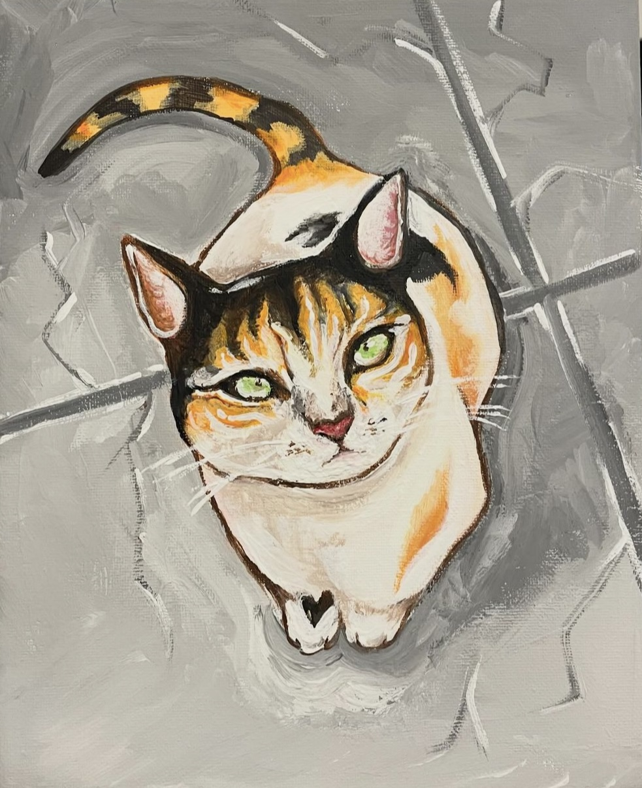
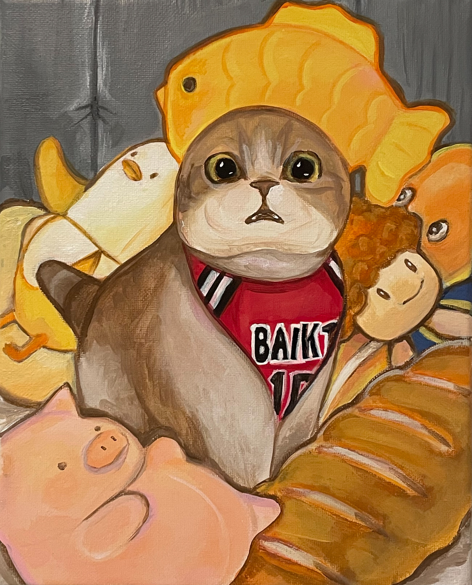
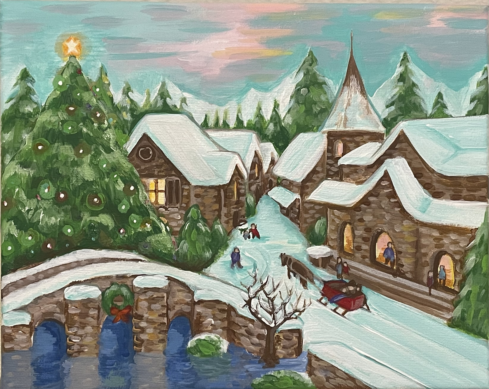
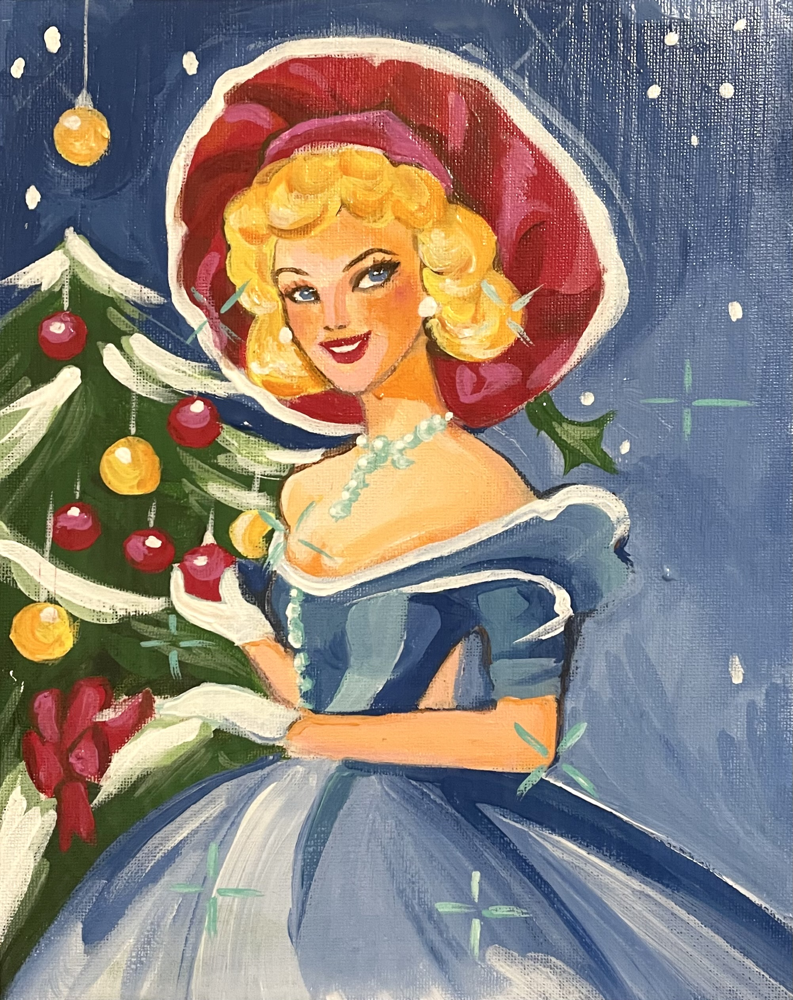

Hi! I'm Grace,
A UX designer based in Maryland

I've always been interested in art, animation, and motion graphics.
From illustrating for UCLA's Daily Bruin to developing an interactive 3D
Ben & Jerry's ice cream simulator, I've always enjoyed bringing creative ideas to life.
My interest in UX/UI design starrted from noticing small frustrations in daily used apps.
Whether it's my friend struggling to share their location, my mom navigating her banking app,
or myself searching for customer support on a shopping website, I realized how unclear
instructions and overlooked features can complicate simple tasks. If these experiences can
be frustrating for people without disabilities, how much harder could they
be for those with disabilities? This curiosity drew me toward UX/UI,
where I could learn to combine creativity with practical problem-solving skills
to make digital experiences more intuitive and simple for people.


My UX/UI journey started at UCLA Extension, where I discovered
how much thought goes into designing the digital experiences we use every day.
Now, as a master's student in Human-Computer Interaction at the University of Maryland,
I've had the chance to turn what I've learned into projects of my own. From redesigning
banking and e-commerce apps to exploring how ChatGPT and Gemini can support my
creative process, each project has taught me something new about research, design, and technology.
One of my most exciting experiences has been collaborating with Public Finance
Firm (PFF), LLC, on its Treasora platform, where I'm learning what it
takes to design for real clients and complex workflows. With my background in
history and a growing interest in accessibility, I've come to appreciate that good
design isn't just about how something looks, but how well it works for the people using it.
Storyboards